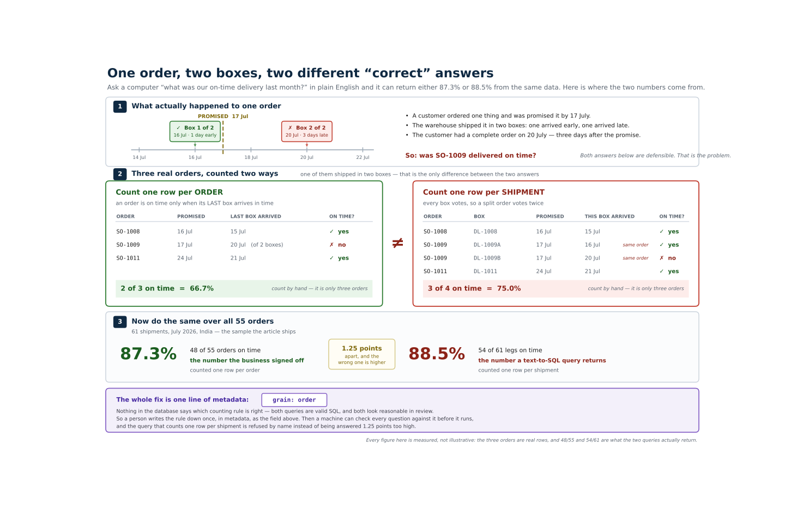

The entire argument in one picture. A courier splits one order into two boxes; the two
defensible ways to count that order disagree, and the disagreement scales to the whole
month. Every figure in it is measured from the data the code below ships — a test
recomputes all of them, including the three-order example. The full-resolution original is
docs/diagrams/grain_two_ways.svg in the repository linked at the end.
Two numbers came out of the same DuckDB file on the same afternoon, from the same question:
"On-time delivery for India warehouses last month."
88.5% and 87.3%. One of them is wrong, and in the review nobody could say which.
That last part is the actual problem, and prompt engineering cannot reach it.
If grain and fan-out are words you already use at work, skip to The rule everything
else follows from. Nothing in this section is needed twice.
A customer orders one thing and is promised it by 17 July. The warehouse ships it in two boxes:
The customer had a complete order on 20 July. So: was that order delivered on time?
Nothing in the database answers that question. There are two counting rules, and both are defensible:
Pick either. Just notice that nobody has written down which one the company means.
These are three actual orders out of the data the code below ships. Two arrived in a single
box; SO-1009 is the one that shipped in two:
| Order | Promised | Boxes | Last box arrived | On time, counting orders? |
|---|---|---|---|---|
SO-1008 |
16 Jul | 1 | 15 Jul | yes |
SO-1009 |
17 Jul | 2 | 20 Jul | no |
SO-1011 |
24 Jul | 1 | 21 Jul | yes |
Counting orders, two of the three were on time — 66.7%.
Counting shipments there are four rows rather than three, because SO-1009 contributes
two: its first box beat the promise and its second missed it. Three of four — 75.0%.
Same three orders, same dates, two answers — and the higher one came from the rule nobody had written down. Across the full month, 55 orders arriving in 61 shipments, those same two rules give 87.3% and 88.5%.
| Word | What it means here |
|---|---|
| grain | What one row of a table stands for. The orders table's grain is one row per order; the delivery table's is one row per shipment. Almost nothing in a database records this. |
| fan-out | What happens when you join a table to a finer-grained one: one order becomes two rows, and gets counted twice. That is the 88.5%. |
| metric | A number with its definition written down — numerator, denominator, grain, which rows to exclude, and a named person who approved it. |
| gate | A check that runs before the query does and refuses it if something the metric declared is not satisfied. |
| provenance | The record of how one answer was produced: which metric, which arithmetic, which rows, which checks passed. |
Everything below is those five ideas as a single Python file you can run.
TL;DR — Natural-language querying does not fail on SQL syntax. It fails on grain: the model writes a valid query against a table whose row meaning nobody wrote down. The fix is architectural — the model picks a governed metric and emits validated JSON, a deterministic compiler writes the SQL, and seven gates run in between. And once that metadata exists, the same file answers the question no BI tool can take — why the number dropped — by attributing each late order to a manufacturing phase. This post is that system as a single file you can paste into a terminal.
You will need Python 3.10 or newer and two packages. No credentials, no network, no warehouse of your own.
pip install duckdb pyyaml
python semantic_layer_demo.py
In this post
New to this? The first section needs no SQL. Only have five minutes? Read the seven gates and why it dropped — that pair is the argument.
The delivery table has one row per delivery leg. An order that ships in two legs — partial shipment on Tuesday, remainder on Friday — has two rows.
Join orders to legs and count, and that order votes twice. Worse: if the first leg arrived before the promised date, the order looks on time twice over, while the second leg that actually blew the promise is one row among 61.
The gap is 1.25 points. Small enough to look like rounding, and it always errs upward.
A wrong number that flatters you is the one that survives to the board deck.
The model did not hallucinate. It wrote syntactically valid, semantically reasonable SQL against a table whose grain nobody had written down anywhere it could read. The failure was in the metadata, so the fix has to be in the metadata.
The model never writes SQL and never does arithmetic. It reads a governed metadata slice and emits a validated JSON object — which metric, which filters, which time window. A deterministic compiler turns that object into SQL.
Text-to-SQL asks a language model to be right about grain, joins, exclusions and fiscal calendars on every single call. This asks it to be right about one much easier thing: which approved metric you meant.
The pipeline is six stages, and only one of them touches a model:
retriever → resolver → validator → compiler → executor → provenance
↑ ↑
the only seven gates, before
model call any SQL exists
Every arrow is one stage reading one artifact for one reason. The figure is generated from
the code it describes, so it cannot drift from the pipeline it depicts. The full-resolution
original is docs/diagrams/nl_dataflow.svg in the repository.
Two users asking the same question in different words get the same number, because the number was never in the model's hands.
Two tables. orders has one row per customer order; delivery_legs has one row per
physical shipment. Six of the July orders shipped in two legs — those six are the entire
disagreement between 87.3% and 88.5%:
DL-1009A,SO-1009,1,2026-07-16
DL-1009B,SO-1009,2,2026-07-20
DL-1010,SO-1010,1,2026-07-22
DL-1011,SO-1011,1,2026-07-21
DL-1012A,SO-1012,1,2026-07-18
DL-1012B,SO-1012,2,2026-07-18
DL-1014A,SO-1014,1,2026-07-19
DL-1014B,SO-1014,2,2026-07-19
DL-1015,SO-1015,1,2026-07-19
DL-1016A,SO-1016,1,2026-07-21
DL-1016B,SO-1016,2,2026-07-21
DL-1017A,SO-1017,1,2026-07-22
DL-1017B,SO-1017,2,2026-07-22
DL-1018A,SO-1018,1,2026-07-23
DL-1018B,SO-1018,2,2026-07-23
SO-1009 is the one that costs you the number. It was promised 2026-07-17. Its first leg
landed 07-16 — on time — and its second landed 07-20. At order grain it is late. At
delivery grain it is one hit and one miss, and the hit came first.
The file embeds the June and July 2026 India slice of the full project: 83 orders, 87 delivery legs, verbatim. That is the whole population behind every figure in this post, so the numbers reproduce exactly rather than approximately.
Read this and ask which fields a catalog pointed at the warehouse could have produced:
- name: on_time_delivery_pct
label: On-Time Delivery %
description: >
Share of eligible customer orders delivered on or before the promised delivery
date. An order counts as delivered only when its final leg arrives.
entity: fact_order_delivery
grain: order
time_dimension: promised_delivery_date
expression:
type: ratio_percent
numerator: "sum(CASE WHEN is_on_time THEN 1 ELSE 0 END)"
denominator: "sum(CASE WHEN is_eligible THEN 1 ELSE 0 END)"
exclusions:
- key: cancelled_orders
predicate: "order_status <> 'CANC'"
rationale: A cancelled order was never due; including it inflates the denominator.
- key: not_yet_due
predicate: "promised_delivery_date <= DATE '__AS_OF_DATE__'"
rationale: >
An order promised after the as-of date is not late, it is pending. Counting it
as a miss understates performance.
business_rules:
- Measured against the CURRENT promised date, not the original.
- Order-grain only. Delivery-grain aggregation double-counts split shipments.
owner: VP Supply Chain
approval_state: approved
lineage: [SAP SD, SAP EWM, SAP TM, fact_order_delivery]
entity and time_dimension, maybe. Not grain. Not exclusions. Not
business_rules. Not approval_state. Those are decisions, made by a named human, and
they are exactly the fields that decide whether an answer is right rather than merely
well-formed.
Four things worth noticing, because each one is a defect that would otherwise ship:
grain: order is declared, not inferred. This is the field that kills 88.5%.rationale. Six months on, an exclusion without a stated reason
gets deleted by someone who assumes it was a mistake.approval_state is read before the model sees anything. The second metric in the
file is draft, so the retriever never offers it — it cannot be asked for because it
was never on the menu.The one-to-many join is declared too, which is what lets a gate see the fan-out coming:
entities:
- name: fact_order_delivery
grain: order # one row per order_id -- the load-bearing declaration
primary_key: order_id
joins:
- to: raw_delivery_legs
on: order_id
cardinality: one_to_many # this is the hop that turns 87.27% into 88.52%
- name: raw_delivery_legs
grain: delivery
primary_key: delivery_id
Which is the part that gets underestimated on a plan. In the full nine-artifact project, exactly one artifact is machine-harvestable — the technical metadata harvested from the SAP data dictionary. Everything else is derived from earlier artifacts, or authored by someone accountable for the decision:

Colour is provenance: harvested, derived, authored. A harvester gets you tables, fields,
domains and types. It cannot get you grain, exclusions, an approved definition or a standard
duration. The full-resolution original is docs/diagrams/metadata_sources.svg in the same
repository.
def build_warehouse() -> duckdb.DuckDBPyConnection:
"""In-memory DuckDB. The one interesting line is the aggregation to ORDER grain.
`final_delivery_date = max(delivery_date)` is what "an order counts as delivered only
when its final leg arrives" means in SQL. Taking min() -- or joining without
aggregating at all -- is the 88.5% bug, and it is a one-word difference.
"""
con = duckdb.connect(":memory:")
variance_cols = PHASE_VARIANCE_CSV.splitlines()[0].split(",")[1:]
for name, ddl, csv_text in (
("raw_orders",
"order_id VARCHAR, region VARCHAR, plant VARCHAR, carrier VARCHAR, "
"promised_delivery_date DATE, order_status VARCHAR", ORDERS_CSV),
("raw_delivery_legs",
"delivery_id VARCHAR, order_id VARCHAR, delivery_leg INTEGER, "
"delivery_date DATE", DELIVERY_LEGS_CSV),
("raw_phase_variance",
"order_id VARCHAR, " + ", ".join(f"{c} INTEGER" for c in variance_cols),
PHASE_VARIANCE_CSV),
):
_load(con, name, ddl, csv_text)
con.execute(f"""
CREATE TABLE fact_order_delivery AS
WITH final_leg AS (
SELECT order_id,
max(delivery_date) AS final_delivery_date,
count(*) AS delivery_count
FROM raw_delivery_legs
GROUP BY order_id -- <-- collapse to one row per ORDER
)
SELECT o.order_id, o.region, o.plant, o.carrier,
o.promised_delivery_date, o.order_status,
f.final_delivery_date,
coalesce(f.delivery_count, 0) AS delivery_count,
-- The two exclusions, materialised as a single eligibility flag.
(o.order_status <> 'CANC'
AND o.promised_delivery_date <= DATE '{AS_OF_DATE}') AS is_eligible,
(f.final_delivery_date IS NOT NULL
AND f.final_delivery_date <= o.promised_delivery_date) AS is_on_time
FROM raw_orders o
LEFT JOIN final_leg f USING (order_id)
""")
return con
max(delivery_date) is what "an order counts as delivered only when its final leg
arrives" means in SQL. Taking min() — or joining without aggregating at all — is the
88.5% bug, and it is a one-word difference in a query nobody would flag in review.
@dataclass(frozen=True)
class QueryIntent:
"""What a language model is permitted to emit. Note what is NOT in here: no SQL, no
column expressions, no arithmetic, no join instructions. Every field is a reference
to something the metadata already declares, which is what makes it checkable."""
intent_type: str # descriptive | diagnostic
metric: str
grain: str
time_window: tuple[str, str]
time_label: str = ""
dimensions: tuple[str, ...] = ()
filters: tuple[Filter, ...] = ()
compare_to: tuple[str, str] | None = None
compare_label: str = ""
def to_json(self) -> str:
return json.dumps({
"intent_type": self.intent_type, "metric": self.metric, "grain": self.grain,
"time_window": list(self.time_window), "dimensions": list(self.dimensions),
"filters": [{"column": f.column, "operator": f.operator, "value": f.value}
for f in self.filters],
}, indent=2)
Note what is not in there: no SQL, no column expressions, no arithmetic, no join instructions. Every field is a reference to something the metadata already declares, which is precisely what makes it checkable by a machine before it runs.
The demo ships an offline keyword resolver so it runs with no credentials. The real one is
this, and the two are interchangeable by design — every stage downstream takes a
QueryIntent and cannot tell which produced it:
def resolve_with_claude(question: str, model: dict) -> QueryIntent: # pragma: no cover
"""The real resolver. Not called by `main` -- shown because it is the whole point.
Two things make this safe, and neither is prompt wording. First, the retriever hands
over only APPROVED metrics, so an unapproved one cannot be picked: it was never
offered. Second, whatever comes back goes through all seven gates before it can
become SQL, so a wrong intent is refused rather than answered.
"""
import anthropic
approved = [m for m in model["metrics"] if m["approval_state"] == "approved"]
slice_for_model = {
"metrics": [{k: m[k] for k in ("name", "label", "grain", "description")
if k in m} for m in approved],
"dimensions": [{"name": d["name"], "allowed_values": d.get("allowed_values")}
for d in model["dimensions"]],
"glossary": [{"term": t["term"], "metric": t["metric"],
"synonyms": t["synonyms"]} for t in model["glossary"]],
}
tool = {
"name": "emit_query_intent",
"description": "Emit the governed query intent for this question.",
"input_schema": {
"type": "object",
"properties": {
"intent_type": {"enum": ["descriptive", "diagnostic"]},
"metric": {"enum": [m["name"] for m in approved]},
"grain": {"type": "string"},
"time_window": {"type": "array", "items": {"type": "string"},
"minItems": 2, "maxItems": 2},
"dimensions": {"type": "array", "items": {"type": "string"}},
"filters": {"type": "array", "items": {
"type": "object",
"properties": {"column": {"type": "string"},
"operator": {"enum": ["=", "in", "between",
">=", "<="]},
"value": {}},
"required": ["column", "operator", "value"]}},
},
"required": ["intent_type", "metric", "grain", "time_window"],
},
}
reply = anthropic.Anthropic().messages.create(
model="claude-sonnet-5",
max_tokens=1024,
system=RESOLVER_SYSTEM_PROMPT,
tools=[tool],
tool_choice={"type": "tool", "name": "emit_query_intent"},
messages=[{"role": "user", "content":
f"Metadata slice:\n{json.dumps(slice_for_model, indent=2)}\n\n"
f"Question: {question}"}],
)
args = next(b.input for b in reply.content if b.type == "tool_use")
return QueryIntent(
intent_type=args["intent_type"], metric=args["metric"], grain=args["grain"],
time_window=tuple(args["time_window"]),
dimensions=tuple(args.get("dimensions", ())),
filters=tuple(Filter(f["column"], f["operator"], f["value"])
for f in args.get("filters", ())),
)
Two things make this safe, and neither of them is prompt wording.
The menu is filtered before the model sees it. approved excludes the draft metric, so
the tool's enum cannot contain it. An unapproved metric is unaskable because it was never
offered — not because a gate would have caught it afterwards.
Whatever comes back is still validated. The system prompt matters less than the fact that a wrong intent gets refused rather than answered:
You select a governed metric. You do not write SQL and you do not do arithmetic.
Return ONLY a QueryIntent. Every value must come from the metadata slice provided:
- metric: an exact name from the approved metric list
- grain: the metric's declared grain, copied verbatim, never inferred from the question
- filters: only columns listed as dimensions, only values from allowed_values
- time_window: explicit start and end dates, never open-ended
If the question cannot be answered from this slice, say so instead of approximating.
An approximation that looks like an answer is worse than a refusal.
GATE_NAMES = ("metric_approved", "dimensions_declared", "filters_bound", "grain_matches",
"no_fanout", "time_window_bounded", "exclusions_applied")
@dataclass
class ValidationResult:
passed: dict[str, bool] = field(default_factory=dict)
failures: list[tuple[str, str]] = field(default_factory=list)
@property
def ok(self) -> bool:
return len(self.passed) == len(GATE_NAMES) and all(self.passed.values())
def validate(qi: QueryIntent, model: dict) -> ValidationResult:
"""Never raises. A hallucinated metric name is a normal, expected input."""
r = ValidationResult()
metric = get_metric(model, qi.metric)
def gate(name: str, ok: bool, why: str = "") -> None:
r.passed[name] = ok
if not ok:
r.failures.append((name, why))
gate("metric_approved",
metric is not None and metric.get("approval_state") == "approved",
f"Metric {qi.metric!r} is not an approved metric. Approved: "
+ ", ".join(m["name"] for m in model["metrics"]
if m["approval_state"] == "approved"))
undeclared = [d for d in qi.dimensions if d not in model["_dims_by_name"]]
gate("dimensions_declared", not undeclared,
f"Dimensions {undeclared} are not declared in the semantic model.")
unbound = [f.column for f in qi.filters if f.column not in model["_dims_by_name"]]
outside = [f"{f.column}={f.value!r}" for f in qi.filters
if f.column in model["_dims_by_name"]
and model["_dims_by_name"][f.column].get("allowed_values")
and f.value not in model["_dims_by_name"][f.column]["allowed_values"]]
gate("filters_bound", not unbound and not outside,
f"Filter columns {unbound} do not bind to a declared dimension."
if unbound else
f"Filter {', '.join(outside)} is outside the declared allowed_values. Without "
f"this gate the query returns zero rows, and zero rows gets read as an answer.")
if metric is None:
gate("grain_matches", False,
f"Cannot check grain: metric {qi.metric!r} is not in the semantic model, so "
f"there is no certified grain to compare {qi.grain!r} against.")
else:
gate("grain_matches", qi.grain == metric["grain"],
f"Metric {qi.metric!r} is certified at grain {metric['grain']!r}; the intent "
f"asks for grain {qi.grain!r}. Aggregating at the wrong grain changes the "
f"number.")
fanout = []
if metric is not None:
home = metric["entity"]
for name in list(qi.dimensions) + [f.column for f in qi.filters]:
dim = model["_dims_by_name"].get(name)
if dim is None or dim["entity"] == home:
continue
join = next((j for j in model["_entities_by_name"][home].get("joins", [])
if j["to"] == dim["entity"]), None)
# A many_to_one hop cannot duplicate rows and must pass. Only one_to_many
# fans out. A gate that blocked every join would look correct and quietly
# break every legitimate cross-entity question.
if join is None or join["cardinality"] == "one_to_many":
fanout.append(f"{name} (on {dim['entity']})")
gate("no_fanout", not fanout,
f"Reaching {', '.join(fanout)} requires a one_to_many join, which duplicates "
f"rows before aggregation.")
start, end = qi.time_window
gate("time_window_bounded", bool(start and end) and start <= end,
f"Time window {qi.time_window} is unbounded or inverted.")
gate("exclusions_applied",
metric is not None and all(e.get("predicate") for e in
metric.get("exclusions", [])),
f"Metric {qi.metric!r} declares an exclusion with no predicate, so it cannot be "
f"applied. A metric whose exclusions cannot be enforced must not be answered.")
return r
Three rules in there are worth stating out loud.
All seven gates always run. Not "until the first failure" — a user asking a badly-formed question deserves every reason at once, not a game of whack-a-mole.
A gate that cannot be evaluated fails closed. Look at grain_matches when the metric
does not exist: it reports a failure explaining that there is no certified grain to compare
against. The tempting alternative is to skip it.
"I did not check" recorded as "I checked and it was fine" is the single most dangerous line you can write in a governance layer.
no_fanout blocks only one_to_many. A many_to_one hop cannot duplicate rows, so
refusing every join would look correct and quietly break every legitimate cross-entity
question. Gates that are too strict get switched off, and a switched-off gate protects
nothing.
And validation runs before compilation, so a refused question never becomes SQL:
def answer(con, qi: QueryIntent, model: dict) -> tuple[int, str]:
"""Validate, then compile. Never the other way round.
The refusal is the feature. "I cannot answer that, and here is which rule stopped me"
is a system you can put in front of a CFO. One that always produces a number is not.
"""
result = validate(qi, model)
if not result.ok:
lines = [f"REFUSED {qi.metric}: the intent did not pass validation.", "",
" gates failed " + ", ".join(g for g, ok in sorted(result.passed.items())
if not ok)]
for gate_name, why in result.failures:
lines += _wrap(gate_name, why)
lines += ["",
" No number is shown. A value that failed a gate is not a caveated",
" answer, it is an unverified one."]
return 1, "\n".join(lines)
ans = execute(con, qi, model)
ans.gates = result.passed
out = [ans.render()]
if qi.intent_type == "diagnostic":
out.append(_diagnose(con, qi, model, ans))
return 0, "\n\n".join(out)
def compile_sql(qi: QueryIntent, model: dict,
window: tuple[str, str] | None = None) -> str:
"""Deterministic. Same intent in, same SQL out, byte for byte.
Ratios are compiled as `sum(numerator) / sum(denominator)`, never as an average of
per-group rates. Averaging rates across groups of unequal size gives a different
number -- Simpson's paradox -- and no amount of prompting reliably prevents a model
from doing it. Here it is structurally impossible.
"""
metric = get_metric(model, qi.metric)
start, end = window or qi.time_window
expr = metric["expression"]
where = [f"{metric['time_dimension']} BETWEEN DATE '{start}' AND DATE '{end}'"]
where += [e["predicate"] for e in metric.get("exclusions", [])] # unconditional
for f in qi.filters:
col = model["_dims_by_name"][f.column]["column"]
where.append(f"{col} {f.operator} '{f.value}'")
group = [model["_dims_by_name"][d]["column"] for d in qi.dimensions]
select = group + [
f"round(100.0 * {expr['numerator']} / nullif({expr['denominator']}, 0), 4) "
f"AS value",
f"{expr['numerator']} AS numerator",
f"{expr['denominator']} AS denominator",
]
sql = (f"SELECT {', '.join(select)}\nFROM {metric['entity']}\n"
f"WHERE {(chr(10) + ' AND ').join(where)}")
if group:
sql += f"\nGROUP BY {', '.join(group)}\nORDER BY {', '.join(group)}"
return sql
Two properties, both structural rather than hoped-for. The exclusions are appended
unconditionally — no branch on what the question asked, so a question that mentions neither
cancellations nor due dates still excludes both. And the ratio is compiled as
sum(numerator) / sum(denominator), so averaging rates across unequal groups is not a
mistake this code is capable of making.
1. THE GOVERNED ANSWER
What was OTD for India warehouses last month?
==============================================================================
The resolver emitted this, and nothing else:
{
"intent_type": "descriptive",
"metric": "on_time_delivery_pct",
"grain": "order",
"time_window": [
"2026-07-01",
"2026-07-31"
],
"dimensions": [],
"filters": [
{
"column": "region",
"operator": "=",
"value": "IN"
}
]
}
Note `grain` came from the metadata, not from the question.
ANSWER On-Time Delivery % is 87.3% -- 48 of 55 eligible orders delivered on or
before the promised date
metric on_time_delivery_pct
arithmetic 48 / 55 = 87.2727%
grain order (one row per order)
window July 2026 (2026-07-01 to 2026-07-31) on promised_delivery_date
filters region = IN
exclusions cancelled_orders, not_yet_due
lineage SAP SD -> SAP EWM -> SAP TM -> fact_order_delivery
trust TRUSTED
gates 7/7 passed: dimensions_declared, exclusions_applied, filters_bound, grain_matches, metric_approved, no_fanout, time_window_bounded
The provenance block is not decoration. Every line of it is the answer to a question somebody will ask in the meeting: which metric, what arithmetic, at what grain, over what window, with which exclusions, from which systems, and which checks passed.
2. THE SAME DATA, COUNTED AT DELIVERY GRAIN
==============================================================================
This is the query a text-to-SQL system writes. It is syntactically valid, semantically
reasonable, and joins orders to legs without collapsing to one row per order:
54 / 61 = 88.5246% <-- reported as 88.5%
6 orders in this window shipped in more than one leg, so 6 orders voted twice.
The gap is 1.25 points -- small enough to look like rounding, and it errs UPWARD.
A wrong number that flatters you is the one that survives to the board deck.
3. THAT QUERY, REFUSED BY NAME -- BEFORE ANY SQL EXISTS
==============================================================================
REFUSED on_time_delivery_pct: the intent did not pass validation.
gates failed grain_matches
grain_matches Metric 'on_time_delivery_pct' is certified at grain
'order'; the intent asks for grain 'delivery'.
Aggregating at the wrong grain changes the number.
No number is shown. A value that failed a gate is not a caveated
answer, it is an unverified one.
A refusal names the gate and the reason.
"I can't answer that, and here is which rule stopped me" is a system you can put in front of a CFO. One that always produces a number is not.
Descriptive questions only need a glossary, a grain and a metric. The question people actually ask is diagnostic, and answering it needs per-phase baselines and an attribution rule declared once, in metadata:
4. THE QUESTION BI TOOLS CANNOT TAKE
Why did on-time delivery drop for India warehouses last month?
==============================================================================
ANSWER On-Time Delivery % is 87.3% -- 48 of 55 eligible orders delivered on or
before the promised date
metric on_time_delivery_pct
arithmetic 48 / 55 = 87.2727%
grain order (one row per order)
window July 2026 (2026-07-01 to 2026-07-31) on promised_delivery_date
filters region = IN
exclusions cancelled_orders, not_yet_due
lineage SAP SD -> SAP EWM -> SAP TM -> fact_order_delivery
trust TRUSTED
gates 7/7 passed: dimensions_declared, exclusions_applied, filters_bound, grain_matches, metric_approved, no_fanout, time_window_bounded
BREAKDOWN
Quality inspection 4
Transportation 2
Production execution 1
unattributed 0
Largest contributor: Quality inspection (4 of 7 late orders).
Transportation ran UNDER its standard on 5 of 7 late orders.
Logistics was the obvious suspect and logistics was faster than
planned. Without per-phase baselines you get a plausible, confident,
wrong story -- and you go optimize the wrong department.
COMPARISON
prior window June 2026 (2026-06-01 to 2026-06-30) on promised_delivery_date
prior value 96.2% (25 / 26)
change down 8.9pp (96.2% -> 87.3%)
That last paragraph is the reason to build any of this. Transportation was the obvious suspect, and transportation ran under its planned standard on five of the seven late orders. Without per-phase baselines you get a plausible, confident, wrong story — and you go and optimize the wrong department.
Note unattributed 0 is printed even though it is zero. An attribution that silently drops
the orders it could not explain is an attribution nobody can audit.
5. FOUR MORE CLASSES OF WRONG QUESTION, EACH REFUSED
==============================================================================
-- a filter value outside the declared allowed set
REFUSED by filters_bound
-- a metric that exists but was never approved
REFUSED by metric_approved
-- an inverted time window
REFUSED by time_window_bounded
-- a dimension reachable only through a one-to-many join
REFUSED by no_fanout
filters_bound is the quiet one. Without a declared allowed-value set, a filter on a
misspelled region returns zero rows — and zero rows gets presented as an answer.
Governance code invites overreading, so:
owner field records who is
accountable. It does not stop anyone from querying anything. Access control, consent and
retention are separate systems, and a semantic layer that implies otherwise is worse than
one that stays silent.Copy this into semantic_layer_demo.py and run it. Nothing else is needed — no repository,
no data files, no credentials.
"""A governed semantic layer for natural-language querying, in one runnable file.
pip install duckdb pyyaml
python semantic_layer_demo.py
No API key, no network, no warehouse to provision. It prints five things:
1. the grain-correct answer 87.3% (48 / 55), all 7 gates passed
2. the naive answer the same data yields 88.5% (54 / 61)
3. that same query REFUSED by name grain_matches
4. why the number moved argmax over declared process variances
5. four more gates refusing four more filters_bound, metric_approved,
classes of wrong question time_window_bounded, no_fanout
THE ARCHITECTURAL RULE, which everything here follows from:
The model never writes SQL and never does arithmetic. It reads a governed metadata
slice and emits a validated JSON object -- which metric, which filters, which time
window. A deterministic compiler turns that object into SQL.
Text-to-SQL asks a language model to be right about grain, joins, exclusions and fiscal
calendars on every call. This asks it to be right about one much easier thing: which
approved metric you meant. `resolve_offline` does that with keyword matching so this file
runs with no credentials; `resolve_with_claude` is the real thing and is not called.
WHAT IS HONESTLY ELIDED, because one file has a size limit:
* The data is the June- and July-2026 India slice of the full project -- 83 orders and
87 delivery legs, verbatim. That is the whole population behind 48/55, 54/61 and the
June comparison, so every figure is reproduced exactly rather than approximated.
* `PHASE_VARIANCE_CSV` is derived upstream in the full project from per-phase SAP
timestamps (`sql/02_staging_model.sql`). Here it is embedded. The attribution rule
itself -- argmax over declared spans, ties to the earliest phase -- is real code
below, and `_check_attribution_covers_the_late_orders` fails loudly if the embedded
rows ever stop matching the orders this file derives as late.
* One metric, one fact table, one grain. The full project has three metrics, nine
metadata artifacts, a process model over twelve manufacturing phases, and 401 tests.
Full project: the nine metadata artifacts, the DQ engine, the diagrams and the test
suite live in the repository this file was extracted from.
"""
from __future__ import annotations
import csv
import io
import json
import re
import sys
import textwrap
from dataclasses import dataclass, field
from datetime import date
try:
import duckdb
import yaml
except ImportError: # pragma: no cover
sys.exit("pip install duckdb pyyaml")
# The project is frozen at an as-of date so every number is reproducible. A demo that
# says "last month" relative to today is a demo whose output nobody can check.
AS_OF_DATE = date(2026, 8, 7)
# ======================================================================================
# 1. THE DATA
# ======================================================================================
# Two tables, and the difference between them is the entire problem. `orders` has one row
# per customer order. `delivery_legs` has one row per PHYSICAL SHIPMENT -- six of these
# orders shipped in two legs, so joining the two and counting rows counts those orders
# twice. If the first leg arrived before the promised date, the order looks on time twice
# over while the leg that actually blew the promise is one row among 61.
ORDERS_CSV = """\
order_id,region,plant,carrier,promised_delivery_date,order_status
SO-1019,IN,1010,BLUEDART,2026-06-13,DLVD
SO-2040,IN,1010,FEDEX,2026-06-05,CANC
SO-2041,IN,1010,BLUEDART,2026-06-08,DLVD
SO-2042,IN,1010,FEDEX,2026-06-24,DLVD
SO-2043,IN,1010,BLUEDART,2026-06-05,DLVD
SO-2044,IN,1010,BLUEDART,2026-06-29,DLVD
SO-2045,IN,1010,FEDEX,2026-06-17,DLVD
SO-2046,IN,1010,BLUEDART,2026-06-29,DLVD
SO-2047,IN,1010,FEDEX,2026-06-01,DLVD
SO-2048,IN,1010,FEDEX,2026-06-01,DLVD
SO-2049,IN,1010,BLUEDART,2026-06-18,DLVD
SO-2050,IN,1010,BLUEDART,2026-06-30,DLVD
SO-2051,IN,1010,FEDEX,2026-06-29,DLVD
SO-2052,IN,1010,BLUEDART,2026-06-29,DLVD
SO-2053,IN,1010,BLUEDART,2026-06-02,DLVD
SO-2054,IN,1010,FEDEX,2026-06-25,DLVD
SO-2055,IN,1010,FEDEX,2026-06-20,DLVD
SO-2056,IN,1010,FEDEX,2026-06-06,DLVD
SO-2057,IN,1010,FEDEX,2026-06-06,DLVD
SO-2058,IN,1010,BLUEDART,2026-06-05,DLVD
SO-2059,IN,1010,FEDEX,2026-06-15,DLVD
SO-2060,IN,1010,BLUEDART,2026-06-30,DLVD
SO-2061,IN,1010,FEDEX,2026-06-11,DLVD
SO-2062,IN,1010,FEDEX,2026-06-20,DLVD
SO-2063,IN,1010,FEDEX,2026-06-15,DLVD
SO-2064,IN,1010,BLUEDART,2026-06-14,DLVD
SO-2065,IN,1010,BLUEDART,2026-06-07,DLVD
SO-1001,IN,1010,BLUEDART,2026-07-13,DLVD
SO-1002,IN,1010,BLUEDART,2026-07-13,DLVD
SO-1003,IN,1010,FEDEX,2026-07-14,DLVD
SO-1004,IN,1010,BLUEDART,2026-07-14,DLVD
SO-1005,IN,1010,BLUEDART,2026-07-15,DLVD
SO-1006,IN,1010,FEDEX,2026-07-15,DLVD
SO-1007,IN,1010,BLUEDART,2026-07-16,CANC
SO-1008,IN,1010,BLUEDART,2026-07-16,DLVD
SO-1009,IN,1010,FEDEX,2026-07-17,DLVD
SO-1010,IN,1010,BLUEDART,2026-07-18,DLVD
SO-1011,IN,1010,BLUEDART,2026-07-24,DLVD
SO-1012,IN,1010,FEDEX,2026-07-19,DLVD
SO-1014,IN,1010,BLUEDART,2026-07-20,DLVD
SO-1015,IN,1010,BLUEDART,2026-07-21,DLVD
SO-1016,IN,1010,FEDEX,2026-07-22,DLVD
SO-1017,IN,1010,BLUEDART,2026-07-23,DLVD
SO-1018,IN,1010,BLUEDART,2026-07-24,DLVD
SO-2001,IN,1010,FEDEX,2026-07-02,DLVD
SO-2002,IN,1010,FEDEX,2026-07-30,DLVD
SO-2003,IN,1010,FEDEX,2026-07-02,DLVD
SO-2004,IN,1010,FEDEX,2026-07-27,DLVD
SO-2005,IN,1010,FEDEX,2026-07-16,DLVD
SO-2006,IN,1010,BLUEDART,2026-07-29,DLVD
SO-2007,IN,1010,BLUEDART,2026-07-30,DLVD
SO-2008,IN,1010,BLUEDART,2026-07-08,DLVD
SO-2009,IN,1010,FEDEX,2026-07-30,DLVD
SO-2010,IN,1010,FEDEX,2026-07-02,DLVD
SO-2011,IN,1010,BLUEDART,2026-07-18,DLVD
SO-2012,IN,1010,BLUEDART,2026-07-04,DLVD
SO-2013,IN,1010,BLUEDART,2026-07-28,DLVD
SO-2014,IN,1010,BLUEDART,2026-07-24,DLVD
SO-2015,IN,1010,BLUEDART,2026-07-15,DLVD
SO-2016,IN,1010,BLUEDART,2026-07-07,DLVD
SO-2017,IN,1010,BLUEDART,2026-07-29,DLVD
SO-2018,IN,1010,BLUEDART,2026-07-31,DLVD
SO-2019,IN,1010,BLUEDART,2026-07-11,DLVD
SO-2020,IN,1010,BLUEDART,2026-07-06,DLVD
SO-2021,IN,1010,FEDEX,2026-07-23,DLVD
SO-2022,IN,1010,BLUEDART,2026-07-22,DLVD
SO-2023,IN,1010,BLUEDART,2026-07-24,DLVD
SO-2024,IN,1010,BLUEDART,2026-07-09,DLVD
SO-2025,IN,1010,FEDEX,2026-07-27,DLVD
SO-2026,IN,1010,FEDEX,2026-07-25,DLVD
SO-2027,IN,1010,FEDEX,2026-07-05,DLVD
SO-2028,IN,1010,FEDEX,2026-07-27,DLVD
SO-2029,IN,1010,FEDEX,2026-07-25,DLVD
SO-2030,IN,1010,BLUEDART,2026-07-09,DLVD
SO-2031,IN,1010,BLUEDART,2026-07-07,DLVD
SO-2032,IN,1010,BLUEDART,2026-07-08,DLVD
SO-2033,IN,1010,FEDEX,2026-07-30,DLVD
SO-2034,IN,1010,BLUEDART,2026-07-04,DLVD
SO-2035,IN,1010,FEDEX,2026-07-09,DLVD
SO-2036,IN,1010,BLUEDART,2026-07-17,DLVD
SO-2037,IN,1010,BLUEDART,2026-07-24,DLVD
SO-2038,IN,1010,BLUEDART,2026-07-30,DLVD
SO-2039,IN,1010,BLUEDART,2026-07-25,DLVD
"""
DELIVERY_LEGS_CSV = """\
delivery_id,order_id,delivery_leg,delivery_date
DL-1019,SO-1019,1,2026-06-18
DL-2041,SO-2041,1,2026-06-07
DL-2042,SO-2042,1,2026-06-23
DL-2043,SO-2043,1,2026-06-04
DL-2044,SO-2044,1,2026-06-28
DL-2045,SO-2045,1,2026-06-16
DL-2046,SO-2046,1,2026-06-28
DL-2047,SO-2047,1,2026-05-31
DL-2048,SO-2048,1,2026-05-31
DL-2049,SO-2049,1,2026-06-17
DL-2050,SO-2050,1,2026-06-29
DL-2051,SO-2051,1,2026-06-28
DL-2052,SO-2052,1,2026-06-28
DL-2053,SO-2053,1,2026-06-01
DL-2054,SO-2054,1,2026-06-24
DL-2055,SO-2055,1,2026-06-19
DL-2056,SO-2056,1,2026-06-05
DL-2057,SO-2057,1,2026-06-05
DL-2058,SO-2058,1,2026-06-04
DL-2059,SO-2059,1,2026-06-14
DL-2060,SO-2060,1,2026-06-29
DL-2061,SO-2061,1,2026-06-10
DL-2062,SO-2062,1,2026-06-19
DL-2063,SO-2063,1,2026-06-14
DL-2064,SO-2064,1,2026-06-13
DL-2065,SO-2065,1,2026-06-06
DL-1001,SO-1001,1,2026-07-12
DL-1002,SO-1002,1,2026-07-16
DL-1003,SO-1003,1,2026-07-19
DL-1004,SO-1004,1,2026-07-18
DL-1005,SO-1005,1,2026-07-18
DL-1006,SO-1006,1,2026-07-19
DL-1008,SO-1008,1,2026-07-15
DL-1009A,SO-1009,1,2026-07-16
DL-1009B,SO-1009,2,2026-07-20
DL-1010,SO-1010,1,2026-07-22
DL-1011,SO-1011,1,2026-07-21
DL-1012A,SO-1012,1,2026-07-18
DL-1012B,SO-1012,2,2026-07-18
DL-1014A,SO-1014,1,2026-07-19
DL-1014B,SO-1014,2,2026-07-19
DL-1015,SO-1015,1,2026-07-19
DL-1016A,SO-1016,1,2026-07-21
DL-1016B,SO-1016,2,2026-07-21
DL-1017A,SO-1017,1,2026-07-22
DL-1017B,SO-1017,2,2026-07-22
DL-1018A,SO-1018,1,2026-07-23
DL-1018B,SO-1018,2,2026-07-23
DL-2001,SO-2001,1,2026-07-01
DL-2002,SO-2002,1,2026-07-29
DL-2003,SO-2003,1,2026-07-01
DL-2004,SO-2004,1,2026-07-26
DL-2005,SO-2005,1,2026-07-15
DL-2006,SO-2006,1,2026-07-28
DL-2007,SO-2007,1,2026-07-29
DL-2008,SO-2008,1,2026-07-07
DL-2009,SO-2009,1,2026-07-29
DL-2010,SO-2010,1,2026-07-01
DL-2011,SO-2011,1,2026-07-17
DL-2012,SO-2012,1,2026-07-03
DL-2013,SO-2013,1,2026-07-27
DL-2014,SO-2014,1,2026-07-23
DL-2015,SO-2015,1,2026-07-14
DL-2016,SO-2016,1,2026-07-06
DL-2017,SO-2017,1,2026-07-28
DL-2018,SO-2018,1,2026-07-30
DL-2019,SO-2019,1,2026-07-10
DL-2020,SO-2020,1,2026-07-05
DL-2021,SO-2021,1,2026-07-22
DL-2022,SO-2022,1,2026-07-21
DL-2023,SO-2023,1,2026-07-23
DL-2024,SO-2024,1,2026-07-08
DL-2025,SO-2025,1,2026-07-26
DL-2026,SO-2026,1,2026-07-24
DL-2027,SO-2027,1,2026-07-04
DL-2028,SO-2028,1,2026-07-26
DL-2029,SO-2029,1,2026-07-24
DL-2030,SO-2030,1,2026-07-08
DL-2031,SO-2031,1,2026-07-06
DL-2032,SO-2032,1,2026-07-07
DL-2033,SO-2033,1,2026-07-29
DL-2034,SO-2034,1,2026-07-03
DL-2035,SO-2035,1,2026-07-08
DL-2036,SO-2036,1,2026-07-16
DL-2037,SO-2037,1,2026-07-23
DL-2038,SO-2038,1,2026-07-29
DL-2039,SO-2039,1,2026-07-24
"""
# variance_days = actual_duration - standard_duration, per manufacturing phase, for the
# orders that missed. Negative means the phase ran UNDER its planned standard. Only late
# orders are attributed: asking "which phase caused the delay" of an on-time order is a
# question with no answer, and inventing one is how dashboards acquire fake precision.
PHASE_VARIANCE_CSV = """\
order_id,mrp,production_order_release,material_staging,production_execution,quality_inspection,goods_receipt,picking,dispatch,transportation,available_slack_days
SO-1019,0,0,0,0,0,0,0,0,5,0
SO-1002,0,0,0,0,4,0,0,0,-1,0
SO-1003,0,0,0,0,0,0,0,0,5,0
SO-1004,0,0,0,0,5,0,0,0,-1,0
SO-1005,0,0,0,4,0,0,0,0,-1,0
SO-1006,0,0,0,0,5,0,0,0,-1,0
SO-1009,0,0,0,0,0,0,0,0,3,0
SO-1010,0,0,0,0,5,0,0,0,-1,0
"""
# ======================================================================================
# 2. THE METADATA
# ======================================================================================
# In the full project this is nine separate governed artifacts with different owners and
# different review cadences. Collapsed here into one document, but the fields are the
# real ones, and the field that matters most is `grain`.
#
# Read `metrics[0]` and ask: which of these could a crawler pointed at the warehouse
# have produced? `entity` and `time_dimension`, maybe. Not `grain`, not `exclusions`,
# not `business_rules`, not `approval_state`. Those are decisions, made by a named human,
# and they are exactly the fields that decide whether an answer is right rather than
# merely well-formed.
SEMANTIC_MODEL_YAML = """
entities:
- name: fact_order_delivery
grain: order # one row per order_id -- the load-bearing declaration
primary_key: order_id
joins:
- to: raw_delivery_legs
on: order_id
cardinality: one_to_many # this is the hop that turns 87.27% into 88.52%
- name: raw_delivery_legs
grain: delivery
primary_key: delivery_id
dimensions:
- name: region
entity: fact_order_delivery
column: region
allowed_values: [IN, US, EU, APAC] # without this, region='MARS' returns zero rows
- name: plant
entity: fact_order_delivery
column: plant
allowed_values: ["1010", "1710"]
- name: carrier
entity: fact_order_delivery
column: carrier
allowed_values: [BLUEDART, FEDEX, DHL]
- name: delivery_id
entity: raw_delivery_legs # only reachable through the one_to_many join
column: delivery_id
metrics:
- name: on_time_delivery_pct
label: On-Time Delivery %
description: >
Share of eligible customer orders delivered on or before the promised delivery
date. An order counts as delivered only when its final leg arrives.
entity: fact_order_delivery
grain: order
time_dimension: promised_delivery_date
expression:
type: ratio_percent
numerator: "sum(CASE WHEN is_on_time THEN 1 ELSE 0 END)"
denominator: "sum(CASE WHEN is_eligible THEN 1 ELSE 0 END)"
exclusions:
- key: cancelled_orders
predicate: "order_status <> 'CANC'"
rationale: A cancelled order was never due; including it inflates the denominator.
- key: not_yet_due
predicate: "promised_delivery_date <= DATE '__AS_OF_DATE__'"
rationale: >
An order promised after the as-of date is not late, it is pending. Counting it
as a miss understates performance.
business_rules:
- Measured against the CURRENT promised date, not the original.
- Order-grain only. Delivery-grain aggregation double-counts split shipments.
owner: VP Supply Chain
approval_state: approved
lineage: [SAP SD, SAP EWM, SAP TM, fact_order_delivery]
- name: production_cycle_time_days
label: Production Cycle Time (days)
entity: fact_order_delivery
grain: order
time_dimension: promised_delivery_date
expression: {type: average, numerator: "avg(0)", denominator: "1"}
approval_state: draft # deliberately unapproved: the retriever never offers it
owner: VP Manufacturing
# Vocabulary. The cheapest phase to build and the one whose absence quietly breaks NL
# querying: a user who types "OTIF" is asking for a governed metric, and without this
# the resolver has nothing to map it to.
glossary:
- term: On-Time Delivery %
metric: on_time_delivery_pct
definition: >
Share of eligible customer orders delivered on or before the promised delivery
date. Measured at order grain (one row per order_id). An order counts as delivered
only when its final delivery leg arrives. Excludes cancelled orders and orders not
yet due.
synonyms: [OTD, on time delivery, on-time delivery, delivery performance,
delivery reliability, promise adherence, OTIF, on time in full]
# The process model is what makes "why did it drop" answerable. Nine attributable spans
# with a planned standard each, and ONE attribution rule stated once, in metadata, rather
# than reinvented per dashboard.
process:
attribution_rule: variance_argmax
tie_break: earliest_phase_seq
variances:
- {phase_seq: 2, key: mrp, label: MRP, standard_duration_days: 1}
- {phase_seq: 3, key: production_order_release, label: Production order release, standard_duration_days: 1}
- {phase_seq: 4, key: material_staging, label: Material staging, standard_duration_days: 1}
- {phase_seq: 5, key: production_execution, label: Production execution, standard_duration_days: 3}
- {phase_seq: 6, key: quality_inspection, label: Quality inspection, standard_duration_days: 1}
- {phase_seq: 7, key: goods_receipt, label: Goods receipt, standard_duration_days: 1}
- {phase_seq: 8, key: picking, label: Picking, standard_duration_days: 1}
- {phase_seq: 9, key: dispatch, label: Dispatch, standard_duration_days: 1}
- {phase_seq: 10, key: transportation, label: Transportation, standard_duration_days: 2}
"""
def load_model() -> dict:
"""Parse the governed metadata. The as-of date is substituted at read time, so the
document itself never carries a date that can silently expire."""
text = SEMANTIC_MODEL_YAML.replace("__AS_OF_DATE__", AS_OF_DATE.isoformat())
model = yaml.safe_load(text)
model["_metrics_by_name"] = {m["name"]: m for m in model["metrics"]}
model["_dims_by_name"] = {d["name"]: d for d in model["dimensions"]}
model["_entities_by_name"] = {e["name"]: e for e in model["entities"]}
return model
def get_metric(model: dict, name: str) -> dict | None:
return model["_metrics_by_name"].get(name)
# ======================================================================================
# 3. THE WAREHOUSE
# ======================================================================================
def build_warehouse() -> duckdb.DuckDBPyConnection:
"""In-memory DuckDB. The one interesting line is the aggregation to ORDER grain.
`final_delivery_date = max(delivery_date)` is what "an order counts as delivered only
when its final leg arrives" means in SQL. Taking min() -- or joining without
aggregating at all -- is the 88.5% bug, and it is a one-word difference.
"""
con = duckdb.connect(":memory:")
variance_cols = PHASE_VARIANCE_CSV.splitlines()[0].split(",")[1:]
for name, ddl, csv_text in (
("raw_orders",
"order_id VARCHAR, region VARCHAR, plant VARCHAR, carrier VARCHAR, "
"promised_delivery_date DATE, order_status VARCHAR", ORDERS_CSV),
("raw_delivery_legs",
"delivery_id VARCHAR, order_id VARCHAR, delivery_leg INTEGER, "
"delivery_date DATE", DELIVERY_LEGS_CSV),
("raw_phase_variance",
"order_id VARCHAR, " + ", ".join(f"{c} INTEGER" for c in variance_cols),
PHASE_VARIANCE_CSV),
):
_load(con, name, ddl, csv_text)
con.execute(f"""
CREATE TABLE fact_order_delivery AS
WITH final_leg AS (
SELECT order_id,
max(delivery_date) AS final_delivery_date,
count(*) AS delivery_count
FROM raw_delivery_legs
GROUP BY order_id -- <-- collapse to one row per ORDER
)
SELECT o.order_id, o.region, o.plant, o.carrier,
o.promised_delivery_date, o.order_status,
f.final_delivery_date,
coalesce(f.delivery_count, 0) AS delivery_count,
-- The two exclusions, materialised as a single eligibility flag.
(o.order_status <> 'CANC'
AND o.promised_delivery_date <= DATE '{AS_OF_DATE}') AS is_eligible,
(f.final_delivery_date IS NOT NULL
AND f.final_delivery_date <= o.promised_delivery_date) AS is_on_time
FROM raw_orders o
LEFT JOIN final_leg f USING (order_id)
""")
return con
def _load(con: duckdb.DuckDBPyConnection, table: str, ddl: str, csv_text: str) -> None:
"""Explicit DDL rather than `read_csv_auto`, so `promised_delivery_date` is a DATE and
not a string that compares lexicographically and looks like it worked."""
rows = list(csv.reader(io.StringIO(csv_text)))
con.execute(f"CREATE TABLE {table} ({ddl})")
marks = ", ".join("?" * len(rows[0]))
con.executemany(f"INSERT INTO {table} VALUES ({marks})", rows[1:])
# ======================================================================================
# 4. THE INTENT -- the only thing the model is allowed to produce
# ======================================================================================
@dataclass(frozen=True)
class Filter:
column: str
operator: str # one of = in between >= <=
value: object
@dataclass(frozen=True)
class QueryIntent:
"""What a language model is permitted to emit. Note what is NOT in here: no SQL, no
column expressions, no arithmetic, no join instructions. Every field is a reference
to something the metadata already declares, which is what makes it checkable."""
intent_type: str # descriptive | diagnostic
metric: str
grain: str
time_window: tuple[str, str]
time_label: str = ""
dimensions: tuple[str, ...] = ()
filters: tuple[Filter, ...] = ()
compare_to: tuple[str, str] | None = None
compare_label: str = ""
def to_json(self) -> str:
return json.dumps({
"intent_type": self.intent_type, "metric": self.metric, "grain": self.grain,
"time_window": list(self.time_window), "dimensions": list(self.dimensions),
"filters": [{"column": f.column, "operator": f.operator, "value": f.value}
for f in self.filters],
}, indent=2)
# ======================================================================================
# 5. THE RESOLVER -- the only stage that calls a model
# ======================================================================================
def resolve_offline(question: str, model: dict) -> QueryIntent:
"""Keyword resolution, so this file runs with no credentials.
This is a stand-in for `resolve_with_claude` below, and the substitution is the point:
every stage downstream receives a `QueryIntent` and cannot tell which produced it. If
swapping the resolver changed anything about how the answer is computed, the
architecture would be leaking.
"""
q = question.lower()
metric = None
for term in model["glossary"]:
candidates = [term["term"]] + term["synonyms"]
if any(c.lower() in q for c in candidates):
metric = term["metric"]
break
if metric is None:
raise ValueError(
f"No governed metric matches {question!r}. The glossary knows: "
+ ", ".join(sorted({s for t in model['glossary'] for s in t['synonyms']}))
)
# Two traps here, both of which this code originally fell into, and both of which are
# about the DIMENSION VALUES rather than about the metric:
#
# substring: "IN" occurs inside "inspection"
# stopword: "IN" IS an English word -- "delivery reliability for FEDEX in APAC"
# resolves to region=IN if the code is matched case-insensitively
#
# So the region CODE is matched case-sensitively against the original question, and
# the human words are matched case-insensitively as declared aliases. Note that both
# bugs produce a perfectly LEGAL filter, which every gate downstream passes -- the
# gates protect the arithmetic, not the reading comprehension. That asymmetry is the
# reason the real resolver is a model handed `allowed_values`, and the reason it is
# confined to choosing rather than computing.
aliases = {"IN": ["india", "indian"], "EU": ["europe", "european", "emea"],
"US": ["usa", "united states", "north america"],
"APAC": ["asia pacific", "asia-pacific"]}
filters = []
for dim in ("region", "plant", "carrier"):
for allowed in model["_dims_by_name"][dim]["allowed_values"]:
hit = re.search(rf"\b{re.escape(allowed)}\b", question) or any(
re.search(rf"\b{re.escape(a)}\b", q) for a in aliases.get(allowed, []))
if hit:
filters.append(Filter(dim, "=", allowed))
break
diagnostic = any(w in q for w in ("why", "cause", "reason", "drop", "driver"))
return QueryIntent(
intent_type="diagnostic" if diagnostic else "descriptive",
metric=metric,
grain=get_metric(model, metric)["grain"], # from METADATA, never from the text
time_window=("2026-07-01", "2026-07-31"),
time_label="July 2026",
filters=tuple(filters),
compare_to=("2026-06-01", "2026-06-30") if diagnostic else None,
compare_label="June 2026" if diagnostic else "",
)
RESOLVER_SYSTEM_PROMPT = """\
You select a governed metric. You do not write SQL and you do not do arithmetic.
Return ONLY a QueryIntent. Every value must come from the metadata slice provided:
- metric: an exact name from the approved metric list
- grain: the metric's declared grain, copied verbatim, never inferred from the question
- filters: only columns listed as dimensions, only values from allowed_values
- time_window: explicit start and end dates, never open-ended
If the question cannot be answered from this slice, say so instead of approximating.
An approximation that looks like an answer is worse than a refusal.
"""
def resolve_with_claude(question: str, model: dict) -> QueryIntent: # pragma: no cover
"""The real resolver. Not called by `main` -- shown because it is the whole point.
Two things make this safe, and neither is prompt wording. First, the retriever hands
over only APPROVED metrics, so an unapproved one cannot be picked: it was never
offered. Second, whatever comes back goes through all seven gates before it can
become SQL, so a wrong intent is refused rather than answered.
"""
import anthropic
approved = [m for m in model["metrics"] if m["approval_state"] == "approved"]
slice_for_model = {
"metrics": [{k: m[k] for k in ("name", "label", "grain", "description")
if k in m} for m in approved],
"dimensions": [{"name": d["name"], "allowed_values": d.get("allowed_values")}
for d in model["dimensions"]],
"glossary": [{"term": t["term"], "metric": t["metric"],
"synonyms": t["synonyms"]} for t in model["glossary"]],
}
tool = {
"name": "emit_query_intent",
"description": "Emit the governed query intent for this question.",
"input_schema": {
"type": "object",
"properties": {
"intent_type": {"enum": ["descriptive", "diagnostic"]},
"metric": {"enum": [m["name"] for m in approved]},
"grain": {"type": "string"},
"time_window": {"type": "array", "items": {"type": "string"},
"minItems": 2, "maxItems": 2},
"dimensions": {"type": "array", "items": {"type": "string"}},
"filters": {"type": "array", "items": {
"type": "object",
"properties": {"column": {"type": "string"},
"operator": {"enum": ["=", "in", "between",
">=", "<="]},
"value": {}},
"required": ["column", "operator", "value"]}},
},
"required": ["intent_type", "metric", "grain", "time_window"],
},
}
reply = anthropic.Anthropic().messages.create(
model="claude-sonnet-5",
max_tokens=1024,
system=RESOLVER_SYSTEM_PROMPT,
tools=[tool],
tool_choice={"type": "tool", "name": "emit_query_intent"},
messages=[{"role": "user", "content":
f"Metadata slice:\n{json.dumps(slice_for_model, indent=2)}\n\n"
f"Question: {question}"}],
)
args = next(b.input for b in reply.content if b.type == "tool_use")
return QueryIntent(
intent_type=args["intent_type"], metric=args["metric"], grain=args["grain"],
time_window=tuple(args["time_window"]),
dimensions=tuple(args.get("dimensions", ())),
filters=tuple(Filter(f["column"], f["operator"], f["value"])
for f in args.get("filters", ())),
)
# ======================================================================================
# 6. THE VALIDATOR -- seven gates, between the model's JSON and any SQL
# ======================================================================================
# Three rules that are not negotiable:
# * All seven gates always run. A user deserves every reason at once, not the first.
# * A gate reports pass only when it actually verified its property. A gate that could
# not be evaluated FAILS CLOSED -- "I did not check" must never be recorded as
# "I checked and it was fine".
# * Validation runs BEFORE compilation, so a refused question never becomes SQL.
GATE_NAMES = ("metric_approved", "dimensions_declared", "filters_bound", "grain_matches",
"no_fanout", "time_window_bounded", "exclusions_applied")
@dataclass
class ValidationResult:
passed: dict[str, bool] = field(default_factory=dict)
failures: list[tuple[str, str]] = field(default_factory=list)
@property
def ok(self) -> bool:
return len(self.passed) == len(GATE_NAMES) and all(self.passed.values())
def validate(qi: QueryIntent, model: dict) -> ValidationResult:
"""Never raises. A hallucinated metric name is a normal, expected input."""
r = ValidationResult()
metric = get_metric(model, qi.metric)
def gate(name: str, ok: bool, why: str = "") -> None:
r.passed[name] = ok
if not ok:
r.failures.append((name, why))
gate("metric_approved",
metric is not None and metric.get("approval_state") == "approved",
f"Metric {qi.metric!r} is not an approved metric. Approved: "
+ ", ".join(m["name"] for m in model["metrics"]
if m["approval_state"] == "approved"))
undeclared = [d for d in qi.dimensions if d not in model["_dims_by_name"]]
gate("dimensions_declared", not undeclared,
f"Dimensions {undeclared} are not declared in the semantic model.")
unbound = [f.column for f in qi.filters if f.column not in model["_dims_by_name"]]
outside = [f"{f.column}={f.value!r}" for f in qi.filters
if f.column in model["_dims_by_name"]
and model["_dims_by_name"][f.column].get("allowed_values")
and f.value not in model["_dims_by_name"][f.column]["allowed_values"]]
gate("filters_bound", not unbound and not outside,
f"Filter columns {unbound} do not bind to a declared dimension."
if unbound else
f"Filter {', '.join(outside)} is outside the declared allowed_values. Without "
f"this gate the query returns zero rows, and zero rows gets read as an answer.")
if metric is None:
gate("grain_matches", False,
f"Cannot check grain: metric {qi.metric!r} is not in the semantic model, so "
f"there is no certified grain to compare {qi.grain!r} against.")
else:
gate("grain_matches", qi.grain == metric["grain"],
f"Metric {qi.metric!r} is certified at grain {metric['grain']!r}; the intent "
f"asks for grain {qi.grain!r}. Aggregating at the wrong grain changes the "
f"number.")
fanout = []
if metric is not None:
home = metric["entity"]
for name in list(qi.dimensions) + [f.column for f in qi.filters]:
dim = model["_dims_by_name"].get(name)
if dim is None or dim["entity"] == home:
continue
join = next((j for j in model["_entities_by_name"][home].get("joins", [])
if j["to"] == dim["entity"]), None)
# A many_to_one hop cannot duplicate rows and must pass. Only one_to_many
# fans out. A gate that blocked every join would look correct and quietly
# break every legitimate cross-entity question.
if join is None or join["cardinality"] == "one_to_many":
fanout.append(f"{name} (on {dim['entity']})")
gate("no_fanout", not fanout,
f"Reaching {', '.join(fanout)} requires a one_to_many join, which duplicates "
f"rows before aggregation.")
start, end = qi.time_window
gate("time_window_bounded", bool(start and end) and start <= end,
f"Time window {qi.time_window} is unbounded or inverted.")
gate("exclusions_applied",
metric is not None and all(e.get("predicate") for e in
metric.get("exclusions", [])),
f"Metric {qi.metric!r} declares an exclusion with no predicate, so it cannot be "
f"applied. A metric whose exclusions cannot be enforced must not be answered.")
return r
# ======================================================================================
# 7. THE COMPILER -- the only thing that writes SQL
# ======================================================================================
def compile_sql(qi: QueryIntent, model: dict,
window: tuple[str, str] | None = None) -> str:
"""Deterministic. Same intent in, same SQL out, byte for byte.
Ratios are compiled as `sum(numerator) / sum(denominator)`, never as an average of
per-group rates. Averaging rates across groups of unequal size gives a different
number -- Simpson's paradox -- and no amount of prompting reliably prevents a model
from doing it. Here it is structurally impossible.
"""
metric = get_metric(model, qi.metric)
start, end = window or qi.time_window
expr = metric["expression"]
where = [f"{metric['time_dimension']} BETWEEN DATE '{start}' AND DATE '{end}'"]
where += [e["predicate"] for e in metric.get("exclusions", [])] # unconditional
for f in qi.filters:
col = model["_dims_by_name"][f.column]["column"]
where.append(f"{col} {f.operator} '{f.value}'")
group = [model["_dims_by_name"][d]["column"] for d in qi.dimensions]
select = group + [
f"round(100.0 * {expr['numerator']} / nullif({expr['denominator']}, 0), 4) "
f"AS value",
f"{expr['numerator']} AS numerator",
f"{expr['denominator']} AS denominator",
]
sql = (f"SELECT {', '.join(select)}\nFROM {metric['entity']}\n"
f"WHERE {(chr(10) + ' AND ').join(where)}")
if group:
sql += f"\nGROUP BY {', '.join(group)}\nORDER BY {', '.join(group)}"
return sql
# ======================================================================================
# 8. EXECUTOR + PROVENANCE
# ======================================================================================
@dataclass
class Answer:
value: float
numerator: int
denominator: int
sql: str
intent: QueryIntent
metric: dict
gates: dict[str, bool]
def render(self) -> str:
m, qi = self.metric, self.intent
filters = ", ".join(f"{f.column} {f.operator} {f.value}"
for f in qi.filters) or "none"
headline = textwrap.wrap(
f"{m['label']} is {self.value:.1f}% -- {self.numerator} of "
f"{self.denominator} eligible orders delivered on or before the promised "
f"date", 71)
return "\n".join([
f"ANSWER {headline[0]}",
*(f" {ln}" for ln in headline[1:]),
"",
f" metric {m['name']}",
f" arithmetic {self.numerator} / {self.denominator} = "
f"{100 * self.numerator / self.denominator:.4f}%",
f" grain {m['grain']} (one row per {m['grain']})",
f" window {qi.time_label or '-'} "
f"({qi.time_window[0]} to {qi.time_window[1]}) on {m['time_dimension']}",
f" filters {filters}",
f" exclusions {', '.join(e['key'] for e in m.get('exclusions', []))}",
f" lineage {' -> '.join(m['lineage'])}",
f" trust TRUSTED",
f" gates {sum(self.gates.values())}/{len(self.gates)} passed: "
+ ", ".join(sorted(self.gates)),
])
def execute(con, qi: QueryIntent, model: dict,
window: tuple[str, str] | None = None) -> Answer:
"""An empty window yields NULLs, not zeros. Zero is a measurement; NULL is the
absence of one, and coercing it to 0.0% would report a catastrophe that never
happened."""
sql = compile_sql(qi, model, window)
value, num, den = con.execute(sql).fetchone()
return Answer(float(value) if value is not None else float("nan"),
int(num or 0), int(den or 0), sql, qi,
get_metric(model, qi.metric), {})
def answer(con, qi: QueryIntent, model: dict) -> tuple[int, str]:
"""Validate, then compile. Never the other way round.
The refusal is the feature. "I cannot answer that, and here is which rule stopped me"
is a system you can put in front of a CFO. One that always produces a number is not.
"""
result = validate(qi, model)
if not result.ok:
lines = [f"REFUSED {qi.metric}: the intent did not pass validation.", "",
" gates failed " + ", ".join(g for g, ok in sorted(result.passed.items())
if not ok)]
for gate_name, why in result.failures:
lines += _wrap(gate_name, why)
lines += ["",
" No number is shown. A value that failed a gate is not a caveated",
" answer, it is an unverified one."]
return 1, "\n".join(lines)
ans = execute(con, qi, model)
ans.gates = result.passed
out = [ans.render()]
if qi.intent_type == "diagnostic":
out.append(_diagnose(con, qi, model, ans))
return 0, "\n\n".join(out)
def _wrap(label: str, text: str, width: int = 78) -> list[str]:
body = textwrap.wrap(text, width - 23)
return [f" {label:<20} {body[0]}"] + [f" {'':<20} {ln}" for ln in body[1:]]
# ======================================================================================
# 9. THE DIAGNOSTIC -- the question BI tools cannot take
# ======================================================================================
# "What was it?" needs a glossary, a grain and a metric. "WHY did it drop?" needs
# per-phase baselines and an attribution rule declared once, in metadata. This is why
# the manufacturing process is in scope at all: the answer to "why" lives upstream in
# production, not in the delivery table.
def _diagnose(con, qi: QueryIntent, model: dict, ans: Answer) -> str:
spans = model["process"]["variances"]
_check_attribution_covers_the_late_orders(con, qi, model)
cur = con.execute(f"""
SELECT v.* FROM raw_phase_variance v
JOIN fact_order_delivery f USING (order_id)
WHERE f.is_eligible AND NOT f.is_on_time
AND f.promised_delivery_date BETWEEN DATE '{qi.time_window[0]}'
AND DATE '{qi.time_window[1]}'
""")
names = [d[0] for d in cur.description]
rows = [dict(zip(names, r)) for r in cur.fetchall()]
# The attribution rule, applied. argmax over the declared spans; ties break to the
# earliest phase_seq so the answer is stable rather than dependent on dict order.
tally: dict[str, int] = {}
for row in rows:
best = max(spans, key=lambda s: (row[s["key"]], -s["phase_seq"]))
key = best["label"] if row[best["key"]] > 0 else "unattributed"
tally[key] = tally.get(key, 0) + 1
# Largest contributor first, ties broken by phase_seq so the order is deterministic
# rather than dependent on which order the rows happened to arrive in.
seq = {s["label"]: s["phase_seq"] for s in spans}
out = [" BREAKDOWN"]
for label in sorted(tally, key=lambda k: (-tally[k], seq.get(k, 99))):
if label != "unattributed":
out.append(f" {label:<28} {tally[label]}")
# Printed even when zero, on purpose: an attribution that silently drops the orders it
# could not explain is an attribution nobody can audit.
out.append(f" {'unattributed':<28} {tally.get('unattributed', 0)}")
top = max((k for k in tally if k != "unattributed"), key=lambda k: tally[k])
out += ["", f" Largest contributor: {top} ({tally[top]} of {len(rows)} late orders)."]
# The finding that makes the case, and it is the opposite of the obvious suspect.
under = [r for r in rows if r["transportation"] < 0]
if under:
out += ["", f" Transportation ran UNDER its standard on {len(under)} of "
f"{len(rows)} late orders.",
" Logistics was the obvious suspect and logistics was faster than",
" planned. Without per-phase baselines you get a plausible, confident,",
" wrong story -- and you go optimize the wrong department."]
if qi.compare_to:
# The prior window is compiled from the SAME metric definition, so the two numbers
# are comparable by construction. A comparison assembled from two hand-written
# queries is where "down 8.9 points" turns out to mean two different things.
prior = execute(con, qi, model, qi.compare_to)
out += ["", " COMPARISON",
f" {'prior window':<26} {qi.compare_label} "
f"({qi.compare_to[0]} to {qi.compare_to[1]}) on "
f"{ans.metric['time_dimension']}"]
if prior.denominator:
direction = "down" if prior.value > ans.value else "up"
out += [f" {'prior value':<26} {prior.value:.1f}% "
f"({prior.numerator} / {prior.denominator})",
f" {'change':<26} {direction} "
f"{abs(prior.value - ans.value):.1f}pp "
f"({prior.value:.1f}% -> {ans.value:.1f}%)"]
else:
out += [f" {'prior value':<26} no eligible orders in the prior window",
f" {'change':<26} not computable"]
return "\n".join(out)
def _check_attribution_covers_the_late_orders(con, qi: QueryIntent, model: dict) -> None:
"""Fail loudly rather than attribute the wrong set.
`PHASE_VARIANCE_CSV` is embedded, while lateness is DERIVED from the order and leg
tables. If those two ever disagree, the breakdown would silently describe a different
population than the headline number. That is precisely the class of defect this whole
project exists to prevent, so it is checked rather than assumed.
"""
window = f"""promised_delivery_date BETWEEN DATE '{qi.time_window[0]}'
AND DATE '{qi.time_window[1]}'"""
derived = {r[0] for r in con.execute(f"""
SELECT order_id FROM fact_order_delivery
WHERE is_eligible AND NOT is_on_time AND {window}""").fetchall()}
embedded = {r[0] for r in con.execute(f"""
SELECT v.order_id FROM raw_phase_variance v
JOIN fact_order_delivery f USING (order_id) WHERE {window}""").fetchall()}
if derived != embedded:
raise AssertionError(
f"attribution population mismatch -- derived late orders {sorted(derived)} "
f"but PHASE_VARIANCE_CSV has {sorted(embedded)}"
)
# ======================================================================================
# 10. THE DEMONSTRATION
# ======================================================================================
def _rule(title: str) -> str:
return f"\n{'=' * 78}\n{title}\n{'=' * 78}"
def main() -> int:
model = load_model()
con = build_warehouse()
failures = 0
# ---- 1. The governed answer ------------------------------------------------------
question = "What was OTD for India warehouses last month?"
print(_rule(f"1. THE GOVERNED ANSWER\n {question}"))
qi = resolve_offline(question, model)
print(f"\nThe resolver emitted this, and nothing else:\n{qi.to_json()}")
print(f"\nNote `grain` came from the metadata, not from the question.\n")
rc, out = answer(con, qi, model)
print(out)
failures += rc
governed = execute(con, qi, model) # kept, so the gap below is measured
# ---- 2. What the same data yields without the grain declaration ------------------
print(_rule("2. THE SAME DATA, COUNTED AT DELIVERY GRAIN"))
naive = con.execute(f"""
SELECT sum(CASE WHEN l.delivery_date <= o.promised_delivery_date
THEN 1 ELSE 0 END) AS on_time, count(*) AS legs
FROM fact_order_delivery o
JOIN raw_delivery_legs l USING (order_id)
WHERE o.is_eligible
AND o.promised_delivery_date BETWEEN DATE '2026-07-01' AND DATE '2026-07-31'
""").fetchone()
naive_pct = 100 * naive[0] / naive[1]
split = con.execute("""
SELECT count(*) FROM fact_order_delivery
WHERE is_eligible AND delivery_count > 1
AND promised_delivery_date BETWEEN DATE '2026-07-01' AND DATE '2026-07-31'
""").fetchone()[0]
print(f"""
This is the query a text-to-SQL system writes. It is syntactically valid, semantically
reasonable, and joins orders to legs without collapsing to one row per order:
{naive[0]} / {naive[1]} = {naive_pct:.4f}% <-- reported as {naive_pct:.1f}%
{split} orders in this window shipped in more than one leg, so {split} orders voted twice.
The gap is {naive_pct - governed.value:.2f} points -- small enough to look like rounding, and it errs UPWARD.
A wrong number that flatters you is the one that survives to the board deck.""")
# ---- 3. That query, refused ------------------------------------------------------
print(_rule("3. THAT QUERY, REFUSED BY NAME -- BEFORE ANY SQL EXISTS"))
print()
rc, out = answer(con, QueryIntent(
intent_type="descriptive", metric="on_time_delivery_pct",
grain="delivery", # <-- the only change
time_window=("2026-07-01", "2026-07-31"), time_label="July 2026",
filters=(Filter("region", "=", "IN"),),
), model)
print(out)
failures += (rc != 1)
# ---- 4. Why it dropped -----------------------------------------------------------
question = "Why did on-time delivery drop for India warehouses last month?"
print(_rule(f"4. THE QUESTION BI TOOLS CANNOT TAKE\n {question}"))
print()
rc, out = answer(con, resolve_offline(question, model), model)
print(out)
failures += rc
# ---- 5. Three more gates ---------------------------------------------------------
print(_rule("5. FOUR MORE CLASSES OF WRONG QUESTION, EACH REFUSED"))
base = dict(intent_type="descriptive", metric="on_time_delivery_pct", grain="order",
time_window=("2026-07-01", "2026-07-31"))
for why, qi in [
("a filter value outside the declared allowed set",
QueryIntent(**base, filters=(Filter("region", "=", "MARS"),))),
("a metric that exists but was never approved",
QueryIntent(**{**base, "metric": "production_cycle_time_days"})),
("an inverted time window",
QueryIntent(**{**base, "time_window": ("2026-07-31", "2026-07-01")})),
("a dimension reachable only through a one-to-many join",
QueryIntent(**base, dimensions=("delivery_id",))),
]:
rc, out = answer(con, qi, model)
gates = ", ".join(g for g, _ in validate(qi, model).failures)
print(f"\n-- {why}\n REFUSED by {gates}")
failures += (rc != 1)
print(_rule("SUMMARY"))
print(f"""
The model chose one thing: which governed metric the question meant. Everything that
had to be exactly right -- grain, exclusions, the join, the arithmetic, the window --
was compiled from metadata by code, the same way every time.
Two users asking the same question in different words get the same number, because the
number was never in the model's hands.
{'OK -- every demonstration behaved as documented.' if not failures
else f'FAILED -- {failures} demonstration(s) did not behave as documented.'}""")
return 1 if failures else 0
if __name__ == "__main__":
sys.exit(main())
Natural-language querying does not fail because models can't write SQL. It fails because the metadata that makes a question answerable correctly — grain, cardinality, exclusions, approved definitions, process baselines — was never written down where anything could read it.
Build that, and the model's job shrinks to something it is genuinely good at: choosing.
This is the third of three pieces on the same build:
The full project adds the other two approved metrics, the nine artifacts as separate governed files with their own owners, data-quality rules that downgrade a trust badge, a twelve-phase process model, and the test suite that holds every figure above in place. The single file here is the part you can read in one sitting and run in one command.
So: what is your team's answer to "which of these two numbers is right"? If it is "ask Priya," you have a semantic layer — it just isn't written down.
Leave the answer in a response. The interesting replies are the ones where the honest answer turns out to be a person.